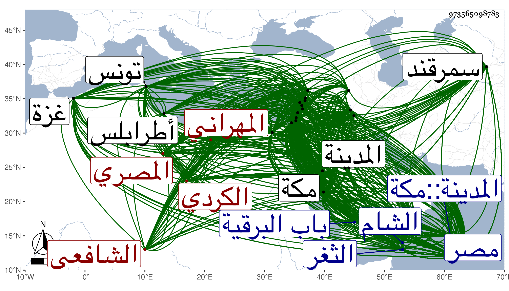

0902Sakhawi.DawLamic.ITO20230111-ara1.EIS1600.973565098783
Biography ID: 973565098783
452
عبد الرحيم بن الحسين بن عبد الرحمن بن أبي بكر بن إبراهيم الزين أبو الفضل الكردي الرازناني الأصل المهراني المصري الشافعي والد الولي أحمد وجويرية وزينب ويعرف بالعراقي . قال ولده انتسابا لعراق العرب وهو القطر الأعم والافهو كردي الأصل أقام سلفه ببلدة من أعمال اربل يقال لها رازنان ولهم هناك مآثر ومناقب إلى أن تحول والده لمصر وهو صغير مع بعض أقربائه فاختص بالشيخ الشريف تقي الدين محمد بن جعفر بن محمد بن الشيخ عبد الرحيم بن أحمد بن حجون القناوي الشافعي شيخ خانقاه رسلان بمنشية المهراني على شاطىء النيل بين مصر والقاهرة ولازم خدمته ورزقه الله قرينة صالحة عابدة صابرة قانعة مجتهدة في أنواع القربات فولدت له صاحب الترجمة بعد أن بشره المشار إليه به وأمره بتسميته باسم جده الأعلى أحد المعتقدين بمصر ، وذلك في حادي عشري جمادى الأولى سنة خمس وعشرين وسبعمائة بالمنشية المذكورة ، وتكرر إحضار أبيه به إلى التقي فكان يلاطفه ويكرمه وعادت بركته عليه ، وكذا أسمعه في سنة سبع وثلاثين من الأمير سنجر الجاولي والقاضي تقي الدين الاخنائي المالكي وغيرهما من ذوي المجالس الشهيرة مما ليس في العلو بذاك ولكنه كان يتوقع وجود حضور له على التقي المشار إليه لكونه كان كثير الكون عنده مع أبيه وكان أهل الحديث يترددون إليه للسماع معه لعلو سنده فإنه سمع من أصحاب السلفي فلم يظفر بذلك ، ولو كان أبوه ممن له عناية لأدرك بولده السماع من مثل يحيى بن المصري آخر من روى حديث السلفي عاليا بالاجازة ، نعم أسمع بعد علي ابن شاهد الجيش وابن عبد الهادي وحفظ القرآن وهو ابن ثمان والتنبيه وأكثر الحاوي وكان رام حفظ جميعه في شهر فمل بعد إثني عشر يوما وعد ذلك في كرامات البرهان الرشيدي فإنه لما استشاره فيه قال انه غير ممكن فقال لا بد لي منه فقال افعل ما بدا لك ولكنك لا تتمه وكذا حفظ الالمام لابن دقيق العيد وكان ربما حفظ منه في اليوم أربعمائة سطر إلى غير ذلك من المحافيظ ولازم الشيوخ في الدراية فكان أول شيء اشتغل به القراءات وكان من شيوخه فيها ناصر الدين محمد بن أبي الحسن بن عبد الملك بن سمعون أحد القدماء ولذا كان التقي السبكي يستدل بأخذ صاحب الترجمة عنه على قدم اشتغاله والبرهان الرشيدي والسراج الدمنهوري والشهاب السمين ومع ذلك فلم يتيسر له إكمال القراءات السبعة إلا على التقي الواسطي في إحدى مجاوراته بمكة ونظر في الفقه وأصوله فحضر في الفقه دروس ابن عدلان ولازم العماد محمد بن إسحق البلبيسي والجمال الاسنوي وعنه وعن الشمس بن اللبان أخذ الاصول وتقدم فيهما بحيث كان الاسنوي يثني على فهمه ويستحسن كلامه في الاصول ويصغي لمباحثه فيه ويقول إن ذهنه صحيح لا يقبل الخطأ ، وفي أثناء ذلك أقبل على علم الحديث بإشارة العز بن جماعة فإنه قال له وقد رآه متوغلا في القراءات : إنه علم كثير التعب قليل الجدوى وأنت متوقد الذهن فاصرف همتك إلى الحديث ، فأخذه بالقاهرة عن العلاء التركماني الحنفي وبه تخرج وعليه انتفع وبيت المقدس وبمكة عن الصلاح العلائي وبالشام عن التقي السبكي وزاد تفننا باجتماعه بهما وأكثر فيها وفي غيرها من البلاد كالحجاز عن شيوخها فمن شيوخه بالقاهرة الميدومي وهو من أعلى شيوخه سندا وليس عنده من أصحاب النجيب غيره وبذلك استدل شيخنا على تراخي جده في الطلب عن سنة اثنتين وأربعين التي كان ابتداء قراءته فيها عشر سنين لأنه لو استمر من الأوان الأول لأدرك جمعا من أصحاب النجيب وابن عبد الدائم وابن علاق وغيرهم وكذا من شيوخه بها أبو القسم بن سيد الناس أخو الحافظ فتح الدين وناصر الدين محمد بن إسماعيل الايوبي بن الملوك وبمصر ابن عبد الهادي ومحمد بن علي بن عبد العزيز القطرواني وبمكة أحمد بن قاسم الحراري والفقيه خليل إمام المالكية بها وبالمدينة العفيف المطري وببيت المقدس العلائي وبالخليل خليل بن عيسى القيمري وبدمشق ابن الخباز وبصالحيتها ابن قيم الضيائية والشهاب المرداوي وبحلب سليمان بن إبراهيم بن المطوع والجمال إبراهيم ابن الشهاب محمود في آخرين بهذه البلاد وغيرها كاسكندرية وبعلبك وحماة وحمص وصفد وطرابلس وغزة ونابلس وتمام ستة وثلاثين بحيث أفرد البلدانيات بالتخريج ورام البروز لبعض الضواحي ومعه بعض المسندين من شيوخ شيخنا ليكملها أربعين فما تيسر بل كان هم حين اشتغاله في القراءات بالتوجه لأبي حيان فصده عن ذلك حسن قصده ، وكذا هم بالرحلة لكل من تونس لسماع الموطأ على خطيب جامع الزيتونة وبغداد فلم يقدر هذا مع انه مكث من رحلته إلى الشام سنة أربع وخمسين لم تخل له سنة غالبا من الرحلة إما في الحديث أو الحج . قال شيخنا في معجمه اشتغل بالعلوم وأحب الحديث لكن لم يكن له من يخرجه على طريقة أهل الاسناد ، وكان قد لهج بتخريج أحاديث الاحياء وله من العمر نحو العشرين يعني سنة خمس وأربعين ، وذكر في شرحه للألفية أن المحدث أبا محمود المقدسي سمع منه شيئا في تلك السنة ثم نبهه العز بن جماعة لما رأى من حرصه على الحديث وجمعه على طريقة أهله فحبب الله له ذلك ولازمه وأكب عليه من سنة اثنتين وخمسين حتى غلب عليه وتوغل فيه بحيث صار لا يعرف إلا به وانصرفت أوقاته فيه وتقدم فيه بحيث كان شيوخ عصره يبالغون في الثناء عليه بالمعرفة كالسبكي والعلائي وابن جماعة وابن كثير وغيرهم يعني كالاسنائي فإنه وصفه بصاحبنا حافظ الوقت ونقل عنه في المهمات وغيرها وترجمه في طبقات الشافعية ولم يذكر فيها من الاحياء سواه وكذا صرح ابن كثير باستفادته منه تخريج شيء وقف على المحدثين وقرأ عليه شيئا ، وذكر في شرحه للألفية انه سمع منه حديثا من مشيخة قاضي المرستان بل امتنع السبكي حين قدومه القاهرة سنة وفاته من التحديث إلا بحضرته وقال العز بن جماعة كل من يدعى الحديث بالديار المصرية سواه فهو مدع ، إلى غير ذلك مما عندي منه الكثير في كلام ولده وغيره ، وتصدى للتخريج والتصنيف والتدريس والافادة فكان من تخاريجه فهرست مرويات البياني ومشيخة التونسي وابن القاري وذيل مشيخة القلانسي وتساعيات للميدومي وعشاريات لنفسه وتخريج الاحياء في كبير ومتوسط وصغير وهو المتداول سماه المغني عن حمل الاسفار في الاسفار في تخريج ما في الاحياء من الأخبار ، ومن تصانيفه الألفية في علوم الحديث وفي السيرة النبوية وفي غريب القرآن وشرح الأولى وكتب على أصلها ابن الصلاح نكتا وكذا نظم الاقتراح لابن دقيق العيد وعمل في المراسيل كتابا وهو من أواخر ما جمعه وتقريب الاسانيد وترتيب المسانيد في الأحكام واختصره وشرح منه قطعة نحو مجلد لطيف وكذا أكمل شرح الترمذي لابن سيد الناس فكتب منه تسع مجلدات ولم يكمل أيضا ، وفي الفقه الاستعاذة بالواحد من إقامة جمعتين في مكان واحد وتاريخ تحريم الربا وتكملة شرح المهذب للنووي بنى على كتابة شيخه السبكي فكتب أماكن واستدراك على المهمات للاسنوي وسماه تتمات المهمات وفي الاصول نظم منهاج البيضاوي إلى غير ذلك مما عندي منه الكثير من المختصرات وسمى ولده في ترجمته للتي أفردها منها جملة ومن الغريب قول البرهان الحلبي إنه خرج لنفسه معجما ، وما وقف شيخنا عليه وكذا وما قفت عليه وولي التدريس للمحدثين بأماكن منها دار الحديث الكاملية والظاهرية القديمة والقراسنقورية وجامع ابن طولون وللفقهاء بالفاضلية وغيرها لهما ، وحج مرارا وجاور بالحرمين وحدث فيهما بالكثير بل وأملى عشارياته بالمدينة وسافر مرة للحج في ربيع الأول سنة ثمان وستين هو وجميع عياله ومنهم ولده الولي أبو زرعة وابن عمه البرهان أبو إسحق إبراهيم بن محمد بن الحسين فرافقهم الشهاب بن النقيب وبدءوا بالمدينة فأقاموا بها عدة أشهر ثم خرجوا إلى مكة وكتب الشهاب حينئذ ألفيته الحديثية بخطه وحضر تدريسها عنده ، وولي قضاء المدينة النبوية وخطابتها وإمامتها في ثاني عشر جمادى الأولى سنة ثمان وثمانين بعد صرف المحب أحمد بن أبي الفضل محمد بن أحمد بن عبد العزيز النويري ونقله لقضاء مكة واستقر عوض صاحب الترجمة في تدريس الحديث بالكاملية السراج بن الملقن مع كونه كان قد استناب ولده فيه ولكن قدم المذكور لشيخوخته ونازعه الولي في ذلك وأطال التكلم إلى أن كفه البلقيني والابناسي بتوسل السراج بهما في ذلك ثم صرف الزين عن القضاء وما معه بعد مضي ثلاث سنين وخمسة أشهر وذلك في ثالث عشر شوال سنة إحدى وتسعين بالشهاب أحمد بن محمد بن عمر الدمشقي السلاوي ، وشرع في الاملاء بالقاهرة من سنة خمس وتسعين فأملى أربعمائة مجلس وستة عشر مجلسا فأولا أشياء نثريات ثم تخريج أربعي النووي ثم مستخرجا على مستدرك الحاكم كتب منه قدر مجيلدة إلى أثناء كتاب الصلاة في نحو ثلثمائة مجلس أولها السادس عشر بعد المائة ولكن تخللها يسير في غيره ثم لما كبر وتعب وصعب عليه التخريج استروح إلى إملاء غير ذلك مما خرجه له شيخنا أو مما لا يحتاج لكبير تعب فكان من ذلك فيما يتعلق بطول العمر وأنشد في آخره قوله من أبيات تزيد على عشرين بيتا :
| بلغت في ذا اليوم سن الهرم | تهدم العمر كسيل العرم |
وآخر ما أملاه كان في صفر سنة ست وثمانمائة لما توقف النيل وشرق أكثر بلاد مصر ووقع الغلاء المفرط وختم المجلس بقصيدة أولها :
| أقول لمن يشكو توقف نيلنا | سل الله يمدده بفضل وتأييد |
يقول في آخرها :
| وأنت فغفار الذنوب وساتر ال | عيوب وكشاف الكروب إذا نودي |
وصلى بالناس صلاة الاستسقاء وخطب خطبة بليغة فرأوا البركة بعد ذلك من كثرة الشيء ووجوده مع غلائه ومع تمشية أحوال الباعة بعد اشتداد الأمر جدا وجاء النيل في تلك السنة عاليا بحمد الله تعالى ، وكان المستملي ولده وربما استملى البرهان الحلبي أو شيخنا أو الفخر البرماوي . قال شيخنا في معجمه : وكان يمليها من حفظه متقنة مهذبة محررة كثيرة الفوائد الحديثية وحكى رفيقه الحافظ الهيثمي أنه رأى النبي صلى الله عليه وسلم في النوم وعيسى عليه السلام عن يمينه وصاحب الترجمة عن يساره ، قال شيخنا وكان منور الشيبة جميل الصورة كثير الوقار نزر الكلام طارحا للتكلف ضيق العيش شديد التوقي في الطهارة لا يعتمد الا على نفسه أو على الهيثمي المشار إليه وكان رفيقه وصهره لطيف المزاج سليم الصدر كثير الحياء قل أن يواجه أحدا بما يكرهه ولو آذاه متواضعا منجمعا حسن النادرة والفكاهة قال وقد لازمته مدة فلم أره ترك قيام الليل بل صار له كالمألوف وإذا صلى الصبح استمر غالبا في مجلسه مستقبل القبلة تاليا ذاكرا إلى أن تطلع الشمس ويتطوع بصيام ثلاثة أيام من كل شهر وستة شوال كثير التلاوة إذا ركب . قال وقد أنجب ولده الولي أحمد ورزق السعادة في رفيقه الهيثمي قال وليس العيان في ذلك كالخبر ، وقال في صدر اسئلة له سألت سيدنا وقدوتنا ومعلمنا ومفيدنا ومخرجنا شيخ الاسلام أوحد الاعلام حسنة الأيام حافظ الوقت فلانا وفي أنبائه إنه صار المنظور إليه في هذا الفن من زمن الأسبائي وهلم جرا قال ولم نر في هذا الفن أتقن منه وعليه تخرج غالب أهل عصره ومن أخصهم به شيخنا صهره الهيثمي وهو الذي دربه وعلمه كيفية التخريج والتصنيف بل كان هو الذي يعمل له خطب كتبه ويسميها له وصار الهيثمي لشدة ممارسته أكثر استحضارا للمتون من شيخه حتى يظن من لا خبرة له إنه أحفظ منه وليس كذلك لأن الحفظ المعرفة قال وقد لازمته عشر سنين سوى ما تخللها من الرحلات ، وكذا لازمه البرهان الحلبي نحوا من عشر سنين وقال أيضا لم أر أعلم بصناعة الحديث منه وبه تخرجت وقد أخبرني إنه عمل تخريج أحاديث البيضاوي بين الظهر والعصر ، وكان كثير الحياء والعلم والتواضع محافظا على الطهارة نقي العرض وافر الجلالة والمهابة على طريق السلف غالب أوقاته في تصنيف أو إسماع مع الدين والأوراد وإدامة الصوم وقيام الليل كريم الأخلاق حسن الشرف ... والأدب والشكل ظاهر الوضاءة كأن وجهه مصباح ومن رآه عرف أنه رجل صالح ، قال وكان عالما بالنحو واللغة والغريب والقراءات والحديث والفقه وأصوله غير إنه غلب عليه فن الحديث فاشتهر به وانفرد بالمعرفة فيه مع العلو قال ودهنه في غاية الصحة ونقله نقر في حجر ، قال وكان كثير الكتب والأجزاء لم أر عند أحد بالقاهرة أكثر من كتبه وأجزائه ويقال إن ابن الملقن كان أكثر كتبا منه وابن المحب كان أكثر أجزاءا منه ، قال وله نظم وسط وقصائد حسان ومحاسنه كثيرة ، وذكره ابن الجزري في طبقات القراء فقال : حافظ الديار المصرية ومحدثها وشيخها . وقال في خطبة عشارياته : وكان بعض شيوخنا من كبار الحفاظ رحمهم الله قد جمع أربعين حديثا عشارية الاسناد ولم يكن في عصره أعلى منه في أقطار البلاد فرأيت أن اقتدي به في ذلك لأني له في كبار شيوخه موافق ومشارك فصاحب الترجمة هو المعنى بالاشارة ، بل قال في كتابه في علوم الحديث في الوفيات وقد ختم بها الكتاب آخر حفاظ الحديث وممليه وجامع أنواعه والمؤلف فيه وبه ختم أئمة هذا العلم وبه ختمت الكتاب والله الموفق للصواب وقد قلت لما بلغتني وفاته وإنه بسمرقند :
| رحمة الله للعراقي تترى | حافظ الأرض حبرها باتفاق |
| إنني مقسم ألية صدق | لم يكن في البلاد مثل العراقي |
وكتبت إلى ولده العلامة ولي الدين أبي زرعة أحمد وهو أفضل من قام بعد أبيه ومن لا نعلم في هذا الوقت له شبيه وهو بالديار المصرية أبقاه الله للاسلام ، وفيه أحسن تورية وألطف إبهام :
| ولي العلم صبرا على فقد والد | رءوف رحيم للورى خير مؤمل |
| إذا فقد الناس العراقي حافظا | إمام هدى حبرا فأنت لهم ولي |
وقال التقي الفاسي في ذيل التقييد كان حافظا متقنا عارفا بفنون الحديث والفقه والعربية وغير ذلك كثير الفضائل والمحاسن متواضعا ظريفا ، ومسموعاته وشيوخه في غاية الكثرة وأخذ عنه علماء الديار المصرية وغيرهم وأثنوا على فضائله وأخذت عنه الكثير بقراءتي وسماعا وبعد انصرافه من المدينة أقام بالقاهرة مشتغلا بالتصنيف والافادة والاسماع حتى مضى لسبيله محمودا ، وقال الصلاح الأقفهسي في معجم الحافظ الجمال بن ظهيرة وكل منهما ممن أخذ عنه دراية ورواية وبرع في الحديث متنا وإسنادا وشارك في الفضائل وصار المشار إليه بالديار المصرية وغيرها بالحفظ والاتقان والمعرفة مع الدين والصيانة والورع والعفاف والتواضع والمروءة والعبادة ومحاسنه كثيرة وقد رأيت الأقفهسي مدحه بقصيدة أولها :
| حديث وجدي في هواكم قديم | والصبر ناء واشتياقي مقيم |
وكذا مدحه بالنظم غير واحد وترجمته محتملة للبسط وهو مترجم في عدة معاجم وفي القراء والحفاظ والفقهاء والرواة والمصريين وكذا ترجمته في المدنيين ، وقال المقريزي في السلوك شيخ الحديث انتهت إليه رياسته ولم يزد ، وقال ابن قاضي شهبة وذكر لنا إنه كان معتدل القامة إلى الطول أقرب كث اللحية يصدع بكلامه أرباب الشوكة لا يهاب سلطانا فضلا عن غيره ، وفيمن أخذت عنه خلق ممن أخذ عنه رواية ودراية أجلهم شيخنا ثم مستمليه والشرف المراغي والعز بن الفرات والشهاب الحناوي والعلاء القلقشندي وتأخر من روى عنه بالسماع إلى بعد الثمانين بقليل وبالاجازة زينب الشوبكية وكان للأمراء في أواخر ذاك القرن اعتناء بالعلماء فكان لكل أمير عالم بالحديث يسمع الناس ويدعو الناس للسماع فاتفق أن الجلال عبيد الله الأردبيلي والد البدر بن عبيد الله أحد مشاهير الحنفية كان ممن يتردد لنوروز بسبب اسماع الحديث عنده فقيل له إن شيخ الحديث هو العراقي فاستدعى به فلما حضر قال عبيد الله مرسومكم قد حصل الاستغناء فقال بل كونا معا والظاهر إن العراقي ترك المجئ ... من ثم فإن أميره كان إما أيتمش صاحب المدرسة التي باب الوزير أو يشبك الناصري الكبير فقد حكى لنا المحب ابن الأشقر أنه سمع على العراقي كلا الصحيحين بمجلسه وإن الشيخ لم يكن يجلس إلا على طهارة فكان إذا أحدث قطع القارئ القراءة حتى يتوضأ ولا يسمح بالمشي على بساط الأمير بدون حائل انتهى . ويحتمل أسماعه عند الجميع . مات عقب خروجه من الحمام في ليلة الأربعاء من شعبان سنة ست وثمانمائة بالقاهرة ودفن بتربتهم خارج باب البرقية وكانت جنازته مشهورة وقدم للصلاة عليه الشيخ شهاب الدين الذهبي ، ومات وله احدى وثمانون سنة وربع سنة نظير عمر السراج البلقيني ، قال شيخنا وفي ذلك أقول في المرثية :
| لا ينقضي عجبي من وفق عمرهما | العام كالعام حتى الشهر كالشهر |
| عاشا ثمانين عاما بعده سنة | وربع عام سوى نقص لمعتبر |
وأشير بذلك إلى أنهما لم يكملا الربع بل ينقص أياما قال وقد ألممت برثائه في الرائية التي رثيت بها البلقيني يعني وسبق منها ما تقدم وخصصته بمرثية قافية وساقها أولها :
| مصاب لم ينفس للخناق | أصار الدمع جارا للأماقي |
| فروض العلم بعد الزهو ذاو | وروح الفضل قد بلغ التراقي |
ومن نظمه مما سبقه لمعناه الذهبي :
| إذا قرأ الحديث على شخص | وأمل ميتتي ليروج بعدي |
| فماذا منه انصاف لأني | أريد بقاءه ويريد فقدي |
ومنه مما سبق أيضا لنحوه :
| ألا ليت شعري هل أبيتن ليلة | بمصر ففيها من أحب نزول |
| وهل أردن يوما موارد نيلها | وهل يبدون لي روضة ونخيل |
وقوله في العشرة المشهود لهم بالجنة :
| وأفضل أصحاب النبي مكانة | ومنزلة من بشروا بجنان |
| سعيد زبير سعد عثمان عامر | علي ابن عوف طلحة العمران |
وقوله ناسجا على منوال أحد المحدثين أحمد بن إبراهيم بن أحمد السنجاري مما كتب به إلى الكمال الشمني بعد موت شيخهما التاج بن موسى السكندري المتوفي بها سنة ثمان وتسعين وسبعمائة :
| في عام تسعين بعد سبع ميء | ثم ثمان تعد بالضبط |
| لم يبق بالثغر من يقال له | حدثكم واحد عن السبط |
وقوله ناسجا على منوال التقي السبكي دروس أحمد خير من دروس أبه البيتان كما قدمتهما في الولي أحمد ، وفي أماليه من نظمه الكثير ، قال المقريزي في عقوده بعد أن ترجمه إنه كان للدنيا به بهجة ولمصر به مفخر وللناس به أنس ولهم منه فوائد جمة ، ومن فوائده قال بت بجامع عمرو ليلة سابع عشري رجب فأنشد سعد الأجذم على المنارة شيئا منه : ما كل مرة تغضب ترجع نصطلح حلفت إن لم ترجعوا لنغضبن زمان فسمع هذا شخص فصرخ صرخة عظيمة فمات قال وصليت عليه ثاني يوم وشهدت جنازته رحمه الله وايانا ونفعنا ببركاته .
